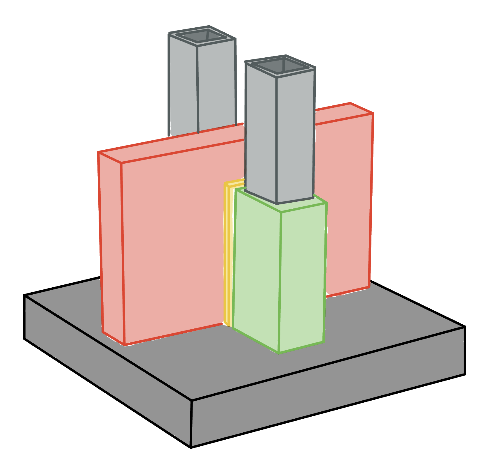
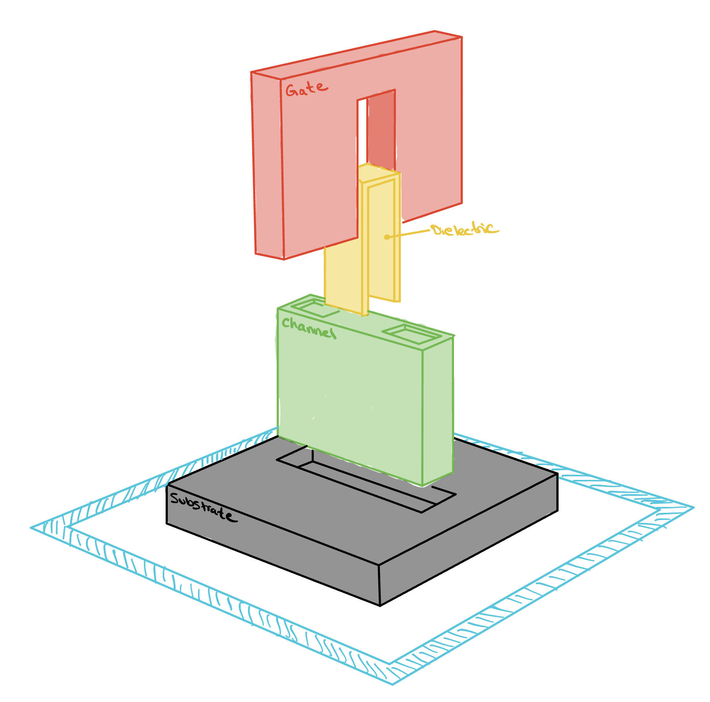
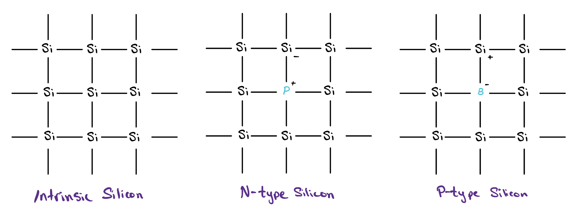

Transistor Basics
Transistors are the building blocks of every modern computer, and yet each one is nothing more than a switch. In this lesson we will look at how that switch actually works, and how just a handful of them, wired together, build the very logic gates we met earlier.

The Anatomy of a Transistor

The transistor is built from four parts:
Substrate
The first, and by far the largest, is the substrate. Sometimes called the bulk, it is a moderately piece of silicon that acts as the foundation the whole device is built on. In short, the bulk is the body of the transistor, the block that everything else is formed into and the steady voltage that everything else is measured against.
Silicon is a Group IV atom, meaning it carries four outer electrons and naturally settles into a lattice where every atom shares one electron with each of its four neighbors, a crystal structure known as diamond cubic. Pure silicon by itself is a poor conductor, because every one of those electrons is locked into a bond and almost none are free to move, so if silicon is going to be any use in our devices we have to find a way of adding free charge carriers to it. Doping is that way.

In the image above, we can see intrinsic silicon at the far left, precisely the pure silicon we just discussed. To its right is a form of n-type silicon. In this lattice, the Group V atom phosphorus takes the place of one of the silicon atoms in the lattice. Because phosphorus naturally has five valence electrons, it can embed itself into the silicon lattice with an extra electron to spare, therefore adding a free electron, e−, to the lattice.
In the far right image, we see another doped piece of silicon, this time with the Group III atom boron, giving us p-type silicon. Since boron has only three valence electrons, when it embeds itself into the silicon lattice it creates a vacancy, known as a hole and written h+. The boron atom can borrow an electron from a neighboring atom, thereby transferring the vacancy across the lattice.
Channel
The second is the channel, the green block standing on the substrate and the path that allows current to get from one end of the transistor to the other. At each end of that path sits a region doped far more heavily than the bulk beneath it, one called the source and the other the drain, and the channel is the stretch of silicon lying between them.
The two are built identically, so nothing about the transistor itself tells them apart. What distinguishes them is the voltage we apply. Carriers enter at the source and leave at the drain, so in an n-type device the source is the terminal held at the lower voltage and the drain is the one held higher. In a p-type device that ordering is reversed.
Gate Oxide
The third part, labeled dielectric in the sketch and drawn in yellow. It is a wafer-thin layer of insulating glass whose only job is to keep the piece above it from ever touching the silicon below.
Gate
The fourth part, shown in red, and this is what gives a transistor its power. Because the oxide holds it away from the channel, the gate cannot pass any current of its own into the silicon. Instead it controls the channel from a distance, purely through the electric field it creates when we place a voltage on it.
This is the whole trick. When we put the right voltage on the gate, its electric field reaches through the oxide and pulls the channel into a conducting state, opening a path so that current flows freely from the source to the drain. Take the voltage away and the channel closes again, and no current can cross. The gate is the lever, and the source and drain are the two contacts it connects or separates. A transistor, for all its tiny complexity, really is just a switch that another wire gets to flip.